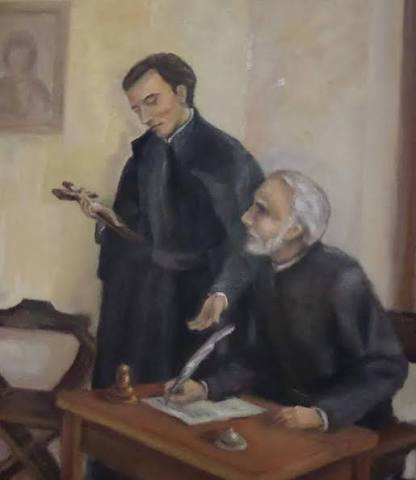
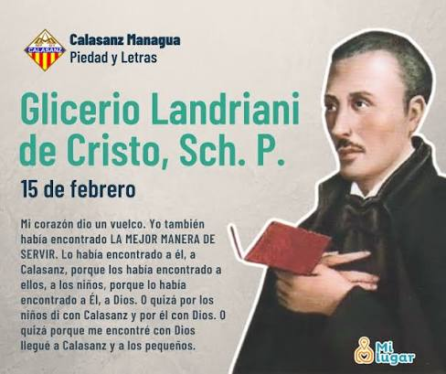
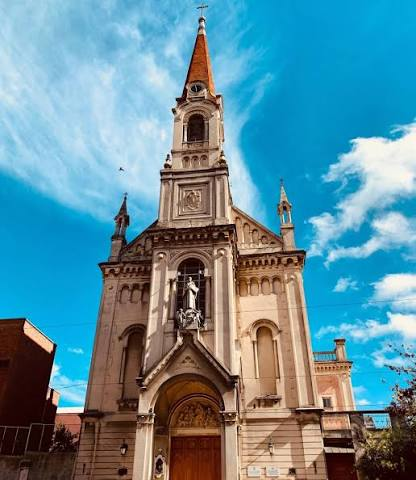
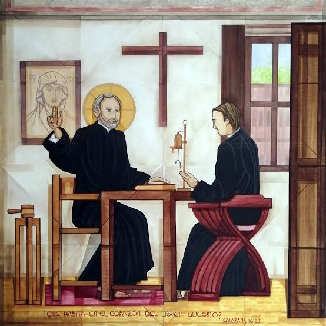

¿Quién fue Glicerio Landriani?
Glicerio de Cristo Landriani nació en Milán en 1588. Pertenecía a una familia socialmente bien posicionada y recibió una buena educación. Con el tiempo desarrolló una vocación religiosa y decidió dedicar su vida a la fe, la educación y el servicio.
En 1612 comenzó a colaborar con las Escuelas Pías de San José de Calasanz en Roma. Allí encontró una manera concreta de vivir su vocación mediante la educación y la evangelización de niños y jóvenes, especialmente de aquellos que vivían en situación de pobreza.
Su vida

Glicerio fue acercándose cada vez más a la vida religiosa y fue dejando de lado las comodidades que tenía. En 1617 comenzó su noviciado con el beato Pedro Casani como maestro de novicios.
Durante este período se dedicó a la oración, la catequesis y la educación de los niños. También colaboró directamente con San José de Calasanz.
Glicerio murió en Roma el 15 de febrero de 1618, cuando todavía era joven y se encontraba en el noviciado. Después de su muerte se extendió la fama de su santidad.
Su obra

La obra de Glicerio estuvo relacionada principalmente con la educación y la evangelización de niños y jóvenes.
Para él, educar no significaba solamente transmitir conocimientos. La educación también era una manera de acercar a los jóvenes a Dios y ayudarlos a crecer tanto intelectual como espiritualmente.
Sus principales actividades
- Educación de niños y jóvenes.
- Catequesis y anuncio del Evangelio.
- Oración y vida espiritual.
- Servicio dentro de las Escuelas Pías.
Glicerio y las Escuelas Pías

Las Escuelas Pías fueron un espacio fundamental en la vida de Glicerio. Allí encontró una forma concreta de vivir su fe mediante la educación y el servicio a los niños y jóvenes.
En 1617, Calasanz le confió la tarea de recibir un documento pontificio que reconocía oficialmente a la nueva Congregación de las Escuelas Pías. Glicerio llevó el documento a Calasanz.
Glicerio y San José de Calasanz

Glicerio colaboró directamente con San José de Calasanz. Su encuentro con las Escuelas Pías le permitió desarrollar su vocación y participar en la misión educativa.
La relación entre ambos estuvo vinculada principalmente con la educación, la catequesis, la oración y el servicio a los demás.
Su legado
El legado de Glicerio Landriani continúa relacionado con la historia de las Escuelas Pías más de cuatro siglos después.
Su vida es recordada por su dedicación a la educación, la fe y el servicio. También se destacan valores como la solidaridad, la sencillez, el compromiso y la vocación.
Valores
- Fe
- Solidaridad
- Sencillez
- Compromiso
- Servicio
- Vocación
Galería
Glicerio Landriani
Imagen principal del personaje investigado.
Su vida
Imagen relacionada con su vida y vocación.
Su obra
Imagen relacionada con su misión educativa.
Escuelas Pías
Imagen relacionada con las Escuelas Pías.
Calasanz
Imagen relacionada con Glicerio y San José de Calasanz.
Fuentes
Material de investigación proporcionado para el proyecto "Rostros de la Santidad Escolapia".
Las fuentes consultadas deberán registrarse y mantenerse actualizadas durante el desarrollo del proyecto.
¿Cuánto aprendiste?
Pregunta 1
¿En qué año nació Glicerio Landriani?
Pregunta 2
¿Con qué institución colaboró Glicerio desde 1612?
Pregunta 3
¿Qué actividad fue parte importante de su misión?
Pregunta 4
¿Con quién colaboró directamente?
Pregunta 5
¿En qué año murió Glicerio?